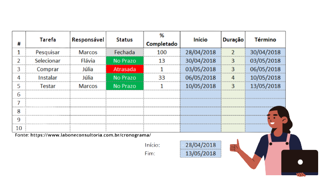

Documentações
No processo de produção das Práticas Profissionais Orientadas, elaborar algumas documentações é chave para se desenvolver um bom projeto. As documentações variam desde um plano de atividades, a, por exemplo, um modelo de Banco de Dados. Em uma pesquisa realizada com professores orientadores do IFPE, algumas documetações foram destacadas a seguir. Ressalta-se a importância de avaliar com o orientador a relevância de tal documentação de modo alinhado ao contexto do projeto. verificou-se que é de suma importância desenvolver os seguintes documentos:
Cronograma
Um documento de cronograma tem a função de estabelecer marcos com datas, como pontos de controle do projeto. No cronograma são considerados alguns pontos importantes como por exemplo, a tarefa a ser elaborada, o tempo de início e o tempo final para elaboração. A seguir vê-se um exemplo de tabela de organização de um cronograma. É importante que o cronograma seja constantemente analisado e controlado para verificar a necessidade de possíveis ajustes, atrasos e dificuldades para a execução das atividades.

Documento de requisitos
O documento de requisitos tem a finalidade de apresentar o escopo, especificando as funcionalidades que projeto deverá possuir. Este documento deve apresentar os requisitos de forma clara, a fim de auxiliar na produção do projeto. Em pesquisa realizada com estudantes egressos do IFPE, verificou-se que alguns deles utilizaram estratégias como formulários e entrevistas para construirem o documento. Todo bom documento de requisitos apresenta a seguite estrutura:
💻 Introdução e visão geral do documento
💻 Descrição de requisitos funcionais
💻 Descrição de requisitos não-funcionais
💻 Escopo não contemplado (de funcionalidades)
💻 Documentação de apoio
Como alternativa do documento de requisitos, existe o Product Backlog, aplicado em metodologias agéis de desenvolvimento como o Scrum. O Product Backlog é uma lista contendo as funcionalidades do projeto no formato de "histórias de usuário" , ou seja, descrevendo os requisitos em uma linguagem mais informal. Neste tipo de documentação, não é necessário que o projeto esteja totalmente especificado desde o início e busca facilitar as mudanças necessárias ao longo desenvolvimento. Logo o foco maior não é na documentação, mas no desenvolvimento do sistema em si, o sofware funcionando. Gradativamente ao longo do projeto, as histórias de usuário são priorizadas e divididas em partes menores, as atividades.
Diagrama de classe
Um diagrama de classes é uma representação da estrutura e relações das classes que servem de modelo para objetos. Eles mapeiam de forma clara a estrutura de um determinado sistema ao modelar suas classes, seus atributos, operações e relações entre objetos. Avalie com seu orientador a necessidade de criar este documento.

Modelo de banco de dados
Um modelo de banco de dados mostra a estrutura lógica de um banco de dados, incluindo as relações e restrições que determinam como os dados podem ser armazenados e acessados. O objetivo do desenvolvimento deste método é de organizar todos os dados do seu projeto, trazendo mais eficiência e sentido para o que está sendo construído. Abaixo, vê-se alguns tipos de modelos de BD.
💻 Modelo relacional: Para quem pretende usar um banco de dados relacional, é importante definir as entidades e os relacionamentos dentro do projeto. Para isso, usa-se o Modelo Entidade-Relacionamento (modelo ER). Neste modelo é explicitado quais são as entidades, seus atributos e como essas entidades se relacionam entre si. Um modelo bem feito evita que durante a construção do banco de dados se tenha incertezas sobre o desenvolvimento.
💻 Modelo não relacional: Para quem vai usar um banco de dados não relacional, como o Firebase, não necessariamente possui um modelo específico de bando de dados. Contudo, para que não ocorram confusões durante a execução do projeto, recomendamos que se faça um modelo semelhante ao ER, para que as ideias sejam tiradas da cabeça e colocadas no papel, com as entidades e seus atributos. No entanto, certamente adaptações serão necessárias para adequar o projeto ao formato não-relacional.
Outras documentações
Existem ainda outras documentações que podem auxiliar na produção do PPO.
💻 Relatórios
💻 Modelo de casos de uso